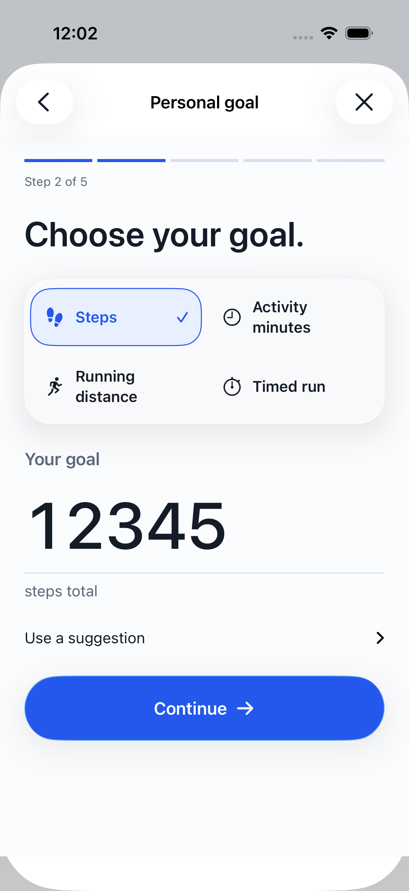

01 / HOME
Your activity
01
Original Signal
Original layout and visual rhythm.
Preserved September 13 browser study. Its fictional rules are dated; this column is a layout reference.
02
Staged creation
Large values and visible controls.

Actual September 20 simulator capture. Relevant component reference, not an earlier version of every screen.
03
Proposed Home
Interactive · local fictional state
Simulated stakes — no real money moves.
Browser glass is an approximation of native material.